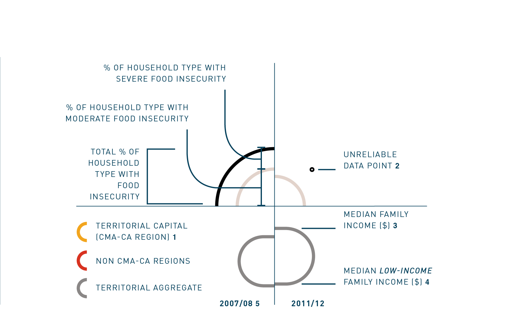

Visualizing Food Insecurity
In Canada’s North
MS Data Visualization Thesis Project by Linnea Lapp
Image by Wknight94 (Own work) [GFDL or CC BY-SA 3.0], via Wikimedia Commons

Although Canada has no official measure of poverty, food insecurity is present in households across the country.
Food security exists when an entire population, at all times, has the physical and financial means to access adequate food. Food insecurity exists when these conditions are not met. Northern Canada’s unique geographical and social landscape make it’s residents especially vulnerable to food insecurity. Extreme temperatures, low population density, isolated communities, inconsistent access, and a higher Aboriginal population set the north apart compared to Canada’s south. This visualization attempts to break down the complexity of food insecurity into an organized narrative, in order to establish a foundational knowledge on which to tackle northern Canadian food security in the future.

Located mainly above the 60th parallel; Northern Canada is a vast, sparsely populated landscape. Extreme environmental conditions and great distances between communities make transportation and access difficult.
Map attributed to Free Vector Maps



The division by family type reveals the vulnerability within certain household constructs. The vertical split along each family type shows the change in food insecurity and income between 2007/08 and 2011/12. Rings representing each data point grow, shrink or remain constant between years and across family types. Data was sourced from Statistics Canada CANSIM Tables 105-0545 and 111-0015.